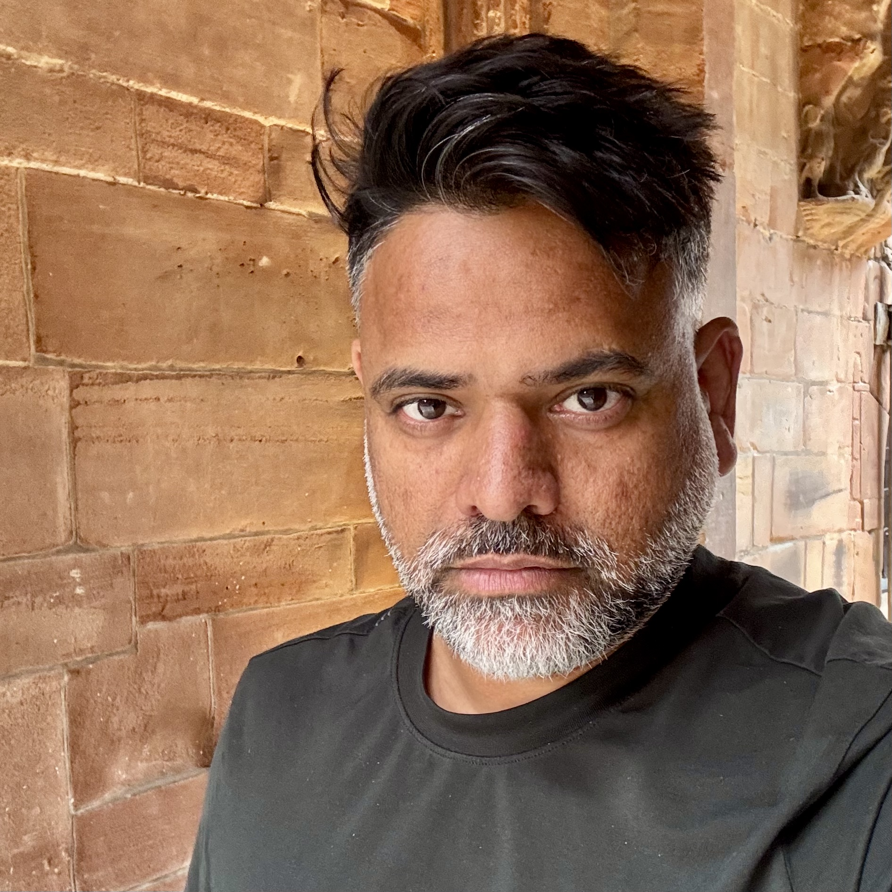

Ashutosh Trivedi
Associate Professor of Computer Science

Email: ashutosh.trivedi@colorado.edu
Research Interests
Safety in AI · Reinforcement Learning · Formal Methods · Software Fairness · Software Accountability
Group
Programming Languages and Verification (CUPLV)
Current PhD Students
- David Baines – Reinforcement Learning for Financial Planning
- Alireza Nadali – Transfer Learning for Control (joint with Majid Zamani)
- Amin Falah – Reinforcement Learning for Continuous-Time MDPs
- Lekai Chen – LLMs and Reinforcement Learning (joint with Alvaro Velasquez)
Graduated PhD Students
- Tianhan Lu (2023) – First employment: Meta, Inc.
- Vishnu Murali – First employment: Postdoctoral Researcher, CU Boulder
- Shadi Tasdigi-Kalat (2025, joint with Sriram Sankaranarayanan)
Publications
See Google Scholar or DBLP for a full list.
Teaching
- CSCI 5454: Design and Analysis of Algorithms
- CSCI 7000: Theoretical Foundations of Reinforcement Learning
- CSCI 7000: Software Fairness and Accountability